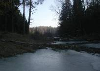
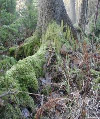
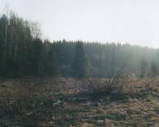
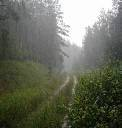
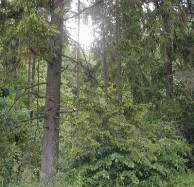
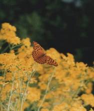
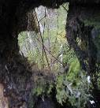
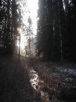

Вальтер Фреверт
(Последний главный лесничий
охотничьего заповедника Роминтер Хайде)
охотничьего заповедника Роминтер Хайде)





Не было ещё Балтийского моря, ещё была покрыта льдом и водой большая часть территории нашей области, но эта земля уже видела свет Солнца, согревающего и дарующего жизнь всему живому. Именно сюда, на Виштынецкую возвышенность, на берег богатого рыбой Виштынецкого озера, 10 тысяч лет назад пришли первые люди нашего края.



Девственные леса, покрывавшие холмы возвышенности, являлись частью единого, обширного лесного массива, названного в средневековье “Великой Дичью”. Эти леса были родным домом многих диких животных, которых по воле человека мы уже не увидим. Исчез зубр, медведь, тур, рысь стала редким гостем.
Охота принесла европейскую известность этим местам, названным Роминтер Хайде. В конце XIX начале XX веков пуща Роминтер Хайде стала заповедником царской охоты с хорошо поставленной лесной и егерской службами. Норвежский архитектурный стиль отдельных строений и целых лесных деревень заповедника, инициированный Вильгельмом II, был уникален для Пруссии. До сих пор поражают воображение канувшие в лету бревенчатый королевский охотничий замок с часовней Хуберта и охотничий двор на высоком берегу Роминты. Среди животных пущи особую известность обрёл благородный олень, привлекавший не только охотников, но и художников, воспевающих его величие и свободу.
Роминтер Хайде и сегодня остаётся одним из красивейших уголков Калининградской области. По сей день, в её лесах обитают благородный олень и лось, волк и лисица, барсук и бобр, а также множество других животных, среди которых такие редкие птицы как орлан белохвост, скопа, чёрный аист. Лесные водоёмы пущи богаты рыбой, а её флора насчитывает около сотни редких и охраняемых видов растений нашей области. Трудно переоценить значение этого уникального природного комплекса для сохранения экологического равновесия нашего региона. Недаром Роминтер Хайде называли “зелёным сердцем Восточной Пруссии”, и будет ли оно биться, зависит от нас.
Охота принесла европейскую известность этим местам, названным Роминтер Хайде. В конце XIX начале XX веков пуща Роминтер Хайде стала заповедником царской охоты с хорошо поставленной лесной и егерской службами. Норвежский архитектурный стиль отдельных строений и целых лесных деревень заповедника, инициированный Вильгельмом II, был уникален для Пруссии. До сих пор поражают воображение канувшие в лету бревенчатый королевский охотничий замок с часовней Хуберта и охотничий двор на высоком берегу Роминты. Среди животных пущи особую известность обрёл благородный олень, привлекавший не только охотников, но и художников, воспевающих его величие и свободу.
Роминтер Хайде и сегодня остаётся одним из красивейших уголков Калининградской области. По сей день, в её лесах обитают благородный олень и лось, волк и лисица, барсук и бобр, а также множество других животных, среди которых такие редкие птицы как орлан белохвост, скопа, чёрный аист. Лесные водоёмы пущи богаты рыбой, а её флора насчитывает около сотни редких и охраняемых видов растений нашей области. Трудно переоценить значение этого уникального природного комплекса для сохранения экологического равновесия нашего региона. Недаром Роминтер Хайде называли “зелёным сердцем Восточной Пруссии”, и будет ли оно биться, зависит от нас.

